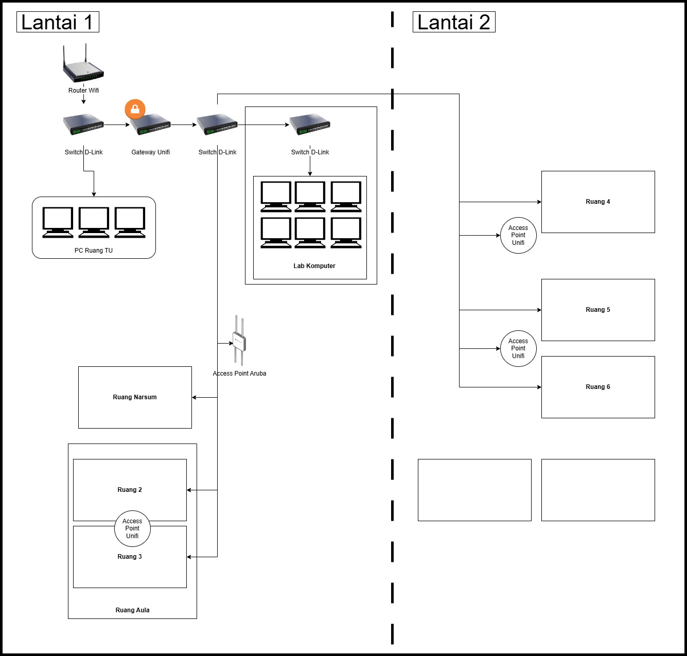

Network Infrastructure Design
Designed and documented the network infrastructure topology for a two-floor building consisting of offices, training rooms, and computer labs.
Key Features
- Mapped connectivity between routers, switches, access points, PCs, printers, and biometric attendance machines
- Covered more than 100 PCs, multiple labs, and administrative offices, ensuring reliable connectivity and bandwidth distribution.
- Delivered a clear topology diagram that supports troubleshooting, monitoring, and future network expansion.
Tech & Tools
- Draw.io / Microsoft Visio for Design
- Ubiquiti Unifi for Installed and Manage
- Winbox for Network Mapping and Full Access Manage
Screenshots
I also had the opportunity to do Design for SP3PAUD

Impact / Outcome
- Easier troubleshooting process for IT staff.
- Increased transparency for infrastructure planning.
- Better documentation for long-term maintenance and scalability.